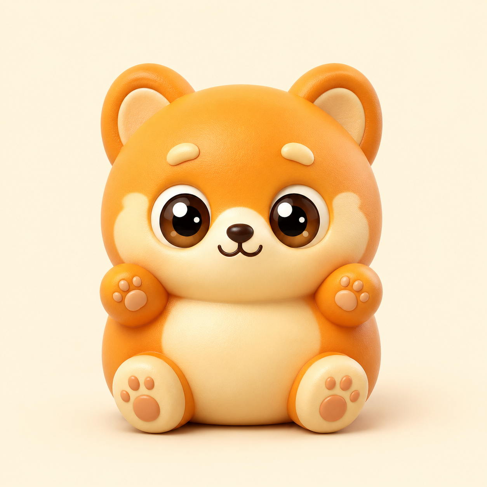

小哒 Coda · 产品需求文档 v4 · CODING AGENT
产品需求文档（PRD）
小哒 Coda（回车键团队出品）· v4 · 撰写 2026-06-27 · 状态：黑客松冲刺·48H MVP · 取代 v3.0 · 与 选题定稿、Agent 接口契约、路演 PPT 衔接
🎯一句话定位
小哒 Coda 是一个常驻桌面、懂你行业的 Review 助手——授权后它扫一遍你的本地项目，反推出你是哪行的，用「你那行的话」把代码问题讲给你听、打分给建议（只读不改）；你越用它越懂你，还能把你攒下的轮子在新项目里直接复用。
回车键 · Enter 一下，世界开始运行
与 v3.0 的关键差异
v3.0 把 Demo 主线压在「能裂变」（行业经验打包成插件、同行 /plugin install 一键装机、装前装后对比），「懂业务」只停在纸面。复盘后认定真正的核心价值是扫存量代码 → 反推行业 → 用行话翻译问题 + 给改法——它不是代码生成器，是小助手。v4 因此重排：① Demo 高潮改为「扫盘→反推行业画像→行业翻译报告」；② 「懂业务」由纸面升为现场真做（半干活：翻译+打分+改法建议，只读不改）；③ 「能裂变（给同行分享插件）」改为「能复用（同一人跨项目复用轮子）」，做医疗最小切片真做；④ 实时监听收窄到自己的触发场景，降为锦上添花。
!问题陈述：用 AI 写代码的人，卡在三件事
目标用户是「行业专家但不懂代码」的跨界者。他们想用 Coding Agent 解决本行业问题，却被三件事挡住：
- ① 看不见（挂着不知道进度） 让 Agent 跑任务，干没干完、要不要确认，得一直盯着终端窗口。盯久了、或网络/token 一失败，就在「门口」放弃了。
- ② 不懂你（只懂技术不懂业务） 通用 Agent 帮你 Review 只懂技术维度（依赖/结构/bug），不懂你的商业逻辑。它说「变量命名不规范」，却不会说「患者隐私字段不该明文存 localStorage」。用了 AI 但感受不到真正懂我。
- ③ 攒不住（跨项目代码越攒越乱、同领域重复造轮子） 同一领域的校验逻辑、状态机、业务规则锁在单个项目里，换项目全部重写；跨阶段、跨项目的代码越攒越乱，没人帮你把同领域的轮子沉淀下来复用。
现有解法的痛点
| 解法 | 痛点 |
|---|
| 通用 LLM（豆包/Kimi） | 不懂行业，每次重新解释背景，知识不积累 |
| Cursor/Copilot | 面向开发者；Review 无业务维度；Agent 状态藏在终端里 |
| Claude Code 裸用 | 能力强但要盯终端、不懂你行业、经验传不出去 |
| 手动分享 Prompt | 传播链条长，接收者需会用 Prompt，门槛依然在 |
👤目标用户 · 贯穿 Demo 的主线人物
核心受众：用 AI 写代码、但跨项目/跨阶段的代码越攒越乱的行业从业者——既有刚入行的，也有深耕某领域的专业人士。他们手里有外部工具，缺的是一个懂业务、拿着鞭子帮我管代码的助手。这类人清楚自己时间价值，付费意愿高。
非目标：只想要「又一个代码生成器」的人（小哒不生成、只 Review）。
王医生 社区诊所全科医生 · 42 岁
深耕临床 15 年，管理诊所日常运营。会微信、会简单 Excel，从未写过代码。
行业语言：候诊、挂号、科室、主诉、就诊时段、复诊
核心诉求：手里攒了几个诊所相关项目，代码越来越乱，想有人用「医疗的话」告诉他哪儿有问题、哪些能复用
用小哒 Coda 后：授权扫他的诊所项目 → 反推出「医疗」画像 + 证据词（看得见 + 懂业务）→ 把「患者隐私字段明文存」翻译成医疗红线 + 给改法（懂业务·只读不改）→ 老项目的「患者 ID 校验 / 就诊状态机」在新诊所项目里直接复用（能复用）
这个人物贯穿 Demo，评委代入感最强。
🖥产品形态：一个常驻桌面的 AI 助手
小哒 Coda 不是又一个代码生成器，而是一个住在你桌面上的 Review 助手——有形象、有状态、会反馈。它扫你的项目、用行话讲问题，懂你的行业，还能把你的轮子在新项目里复用。

形象设定 · 小哒 Coda暖橙色萌系小柴犬精灵，大眼睛、肉垫，住在桌面一角。它就是产品的「脸」——状态全靠它的表情/动作传达。详见
产品命名定稿。
产品载体（参考 clawd-on-desk 类桌面宠物）
- 桌面常驻形象 像素宠物 / 角色形象常驻桌面一角，不抢屏、随时可见。
- 状态即形象 思考中💭 / 写代码⌨️ / 干完了✅ / 等你确认🙋——看一眼形象就知道，不用盯终端。
- 收窄监听 · 踩红线才弹 不全量盯所有通知，只在自己的触发场景（如踩到行业红线）才弹出来提醒——该响时响、该静时静。
- 扫盘 + 行业能力库 扫描本地项目反推行业画像，沉淀同领域可复用轮子——这是「懂业务」和「能复用」的技术载体。
技术栈方向：本地目录扫盘引擎（纯遍历、只读）+ Agent 层导出 /profile · /review 两个 API + 桌宠前端。详见 Agent 接口契约。
⚡三个核心功能（已排名 · 今晚→明早按此跑通主路径）
优先级 = ①评价 → ②解释 → ③复用。人设跟随 + 提醒作贯穿/辅助；传播留二期。只做关键主路径，不强求全实现。
① 评价（评审）· 排第一 · 现场真做炸场
给「史山」代码打个分，让你心里踏实
扫盘 → 反推行业 → 给代码质量打分 + 用行话讲问题
就像觉得电脑卡了去扫描清理——哪怕没删掉什么，分数上来了，你就敢踏实干活。作为专业工具告诉你「代码没大问题」，本身就是价值。
- 扫盘反推画像（炸场点） 授权只读后扫全盘，命中 patient / 就诊 / 禁忌症 →「我猜你是做医疗的」+ 置信度 + 证据
- 打分 + 行业语言翻译 给质量分；「患者字段明文存 localStorage」→「患者隐私字段裸奔，违反医疗红线」，带红线等级
- 半干活：给建议不自动改 每条挂「怎么改」文字方案，只读不改——显得能干活又不碰代码，安全承诺完整
② 解释 · 排第二
用你熟悉的行业经验，把 Coding 翻译成白话
让用户知道现在处于哪个阶段、这段代码在你行业里相当于什么
- 行业白话映射 把「订单状态机」讲成「病历流转」，把技术阶段翻译成用户行业里看得懂的事
- 阶段感知 告诉用户「现在在做什么、到哪一步了」，用领域语言而非技术黑话
- 降低门槛 刚入行 / 跨界的人也能跟上，不被前端/API/数据库这些词挡在门外
③ 复用 · 排第三 · 医疗最小切片真做
扫不同项目识别可共用的东西，新项目不从零开始
从别的项目里把你正在做的东西拿出来，有可能直接就能用
- 老项目抽轮子入库 从项目 A 真实抽出「患者 ID 校验 / 就诊状态机」，进同领域行业能力库
- 新项目命中同行业 · 提醒复用 扫项目 B 识别为同领域 → 弹「有现成的，直接用」→ 给代码片段
- 越用越省 同领域项目越多，能复用的越多，行业库越积越厚
贯穿能力 · 人设跟随：扫盘与复用的产出反向丰富画像——你越用，人设越准；评价/复用沉淀下来的信息回喂画像，下次更懂你。辅助能力 · 提醒：踩到关键行业信息时主动弹出（亮点，但与复用实现成本相近，排主路径之后）。
🔧技术地基：扫盘引擎 + Agent 两个 API
架构最小可跑：扫盘是本地纯遍历、只读（零外部依赖、零风险，安全承诺天然成立）；Agent 层只导出两个 API，边界清晰、48h 可控。评委随便给个项目目录都能当场扫——不是固定路径表演，这是产品完成度的底气。
三模块数据流
# ① 扫盘引擎（本地遍历，只读）
扫描目录 → 命中中英文行业词 → {行业, 证据词, 文件清单}
# ② Agent 层导出两个 API
POST /profile 入参=扫盘结果 出参=行业画像（可编辑）
POST /review 入参=画像+文件/片段 出参=[问题(行话)+打分+改法]
# ③ 前端 / 桌宠
画像卡可编辑 · 报告页 · 复用提醒弹窗
两个 API 承载「评价 / 解释」与「复用」
POST /profile 扫盘结果 → 行业画像（industry / confidence / evidence / redlines / 可手改）POST /review 画像上下文 + 单文件 → [{problem(行话), techDetail, redlineLevel, fix(改法建议), loc}] + score 打分- 只读不改 Agent 永远只输出「问题 + 翻译 + 改法建议」文本，绝不返回自动落盘的 diff
- 复用提醒 复用
/profile 的行业判定，命中同行业 + 相似意图时触发，给出行业库里的轮子片段
完整入参/出参/医疗示例 + 关键词库见 Agent 接口契约。桌宠前端 48h 内可原型/录屏呈现，扫盘 + 两个 API 真跑。
⚙核心功能清单（按排名 ①评价 ②解释 ③复用 分组）
P0 今晚→明早跑通主路径 P1 加分项 P2 二期
① 评价（评审）· 排第一 · 今晚打 Agent
| 功能 | 优先级 |
|---|
| 扫盘引擎：遍历本地目录 + 中英文医疗关键词匹配，反推 {行业, 证据词, 文件清单} | P0 |
/profile：扫盘结果 → 行业画像（含证据词，炸场点） | P0 |
/review：代码质量打分 + 翻译成行业语言 + 改法建议（只读不改） | P0 |
| 报告页：分数 + 行业翻译 + 红线等级 + 改法（前端展示） | P0 |
② 解释 · 排第二 · 明早
| 功能 | 优先级 |
|---|
行业白话映射：把技术概念/阶段翻译成用户行业语言（同 /review 出参里的 problem 字段口径） | P0 |
| 阶段感知：告诉用户「现在在做什么、到哪一步」 | P1 |
③ 复用 · 排第三 · 时间够再上
| 功能 | 优先级 |
|---|
| 医疗行业能力库：从项目 A 抽 1~2 个轮子（患者 ID 校验 / 就诊状态机）入库 | P1 |
| 扫项目 B 命中同行业 → 提醒「你做过类似的，有现成轮子」→ 给代码片段 | P1 |
| 通用跨项目自动抽象复用引擎（任意行业、任意组件） | P2 |
贯穿 / 辅助 · 人设跟随 + 提醒 + 桌宠
| 功能 | 优先级 |
|---|
| 人设跟随：扫盘/复用产出反向丰富画像，越用越准（画像卡可手改） | P1 |
| 提醒：踩关键行业信息主动弹（与复用成本相近，主路径之后） | P2 |
| 桌宠常驻形象 + 状态动画（原型/录屏即可） | P1（录屏） |
| 传播：把行业经验分享给同行 | P2 |
▢48 小时 MVP 范围
核心取舍：火力压在第一幕（扫盘 → 画像 → 翻译报告 + 打分建议）——当场能演真的、最不依赖 hook 稳定性。第二幕复用收窄到医疗 + 1~2 个轮子的最小可信切片（真扫真抽真匹配真给片段）。「看得见」桌宠用原型/录屏。
✓ 48h 必做（当场演真的）
- 扫盘引擎：遍历目录 + 中英文关键词库 + 反推画像
- Agent 行业翻译 + 打分 + 改法建议（只读不改）
/profile + /review 两个 API- 画像卡可手改，改完下次生效
- 医疗行业能力库 + 跨项目复用 1~2 个轮子
- 预备两个医疗项目素材（A 已扫入库 / B 当场扫）
- 桌宠原型 / 状态形象录屏 + 王医生贯穿讲稿
✕ 明确不做
- 自动改用户代码 / 自动重构（与「只读不改」冲突）
- 通用跨项目抽象复用引擎（生产级，做不出真的）
- 全量监听任何通知（收窄到自己的触发场景）
- 给同行分享插件 / 插件市场（原 v3.0 主线，二期）
- 注册/登录/账号体系、多用户/上下级 Review
- 游戏化完整实现（仅形象示意）
- 订阅/付费墙、自定义域名、多语言
▶Demo 演示脚本（两幕 · 全真）
第一幕 · 主角 · 炸场（扫盘 → 画像 → 行业翻译）
1
授权本地医疗项目 A
现场 open 一个医疗项目，强调只读不可改——系统只看、不删不改任何代码
2
扫盘 · 关键词拆解
遍历目录，扫变量名 / 文件名 / 注释 / 字符串里的中英文行业词
3
炸场点 · 反推职业画像
「我猜你是做医疗的」+ 证据（命中 patient / 就诊 / 药品 / 禁忌症）+ 置信度
4
行业语言映射报告 + 打分
3~5 个代码问题翻译成「医疗行话」，每条带红线等级 + 评分
5
每条挂「建议怎么改」
给文字改法（不自动改）——半干活，显得能干活又不碰代码
6
画像卡 · 可手改
画像可编辑，改完下次扫盘按新画像走——演「越用越懂你」最小闭环
第二幕 · 升华 · 克制（跨项目复用 · 医疗最小切片）
7
授权项目 B（另一医疗项目）
扫盘命中同行业 → 小哒「你做过类似的项目」
8
提醒「有现成轮子」→ 给代码片段
行业库里有从项目 A 真实抽出的「患者 ID 校验 / 就诊状态机」，当场给可复用片段
行业语言映射示例（报告长这样）
「订单状态机缺一步校验」→ 病历流转少了"医嘱复核"，可能漏掉禁忌症 · 「患者字段明文存 localStorage」→ 患者隐私字段裸奔，违反医疗数据红线 · 「时段并发未加锁」→ 同一就诊时段会被重复挂号，候诊顺序会乱
路演话术关键句
- 「它不是又一个代码生成器，是一个住在你桌面上、懂你行业的 Review 助手」
- 「我没问你是哪行的——它扫一眼你的代码，自己就猜出来了」
- 「它只读不改，但它会用你那行的话，告诉你哪儿踩了红线、该怎么改」
📊成功指标（对齐五维评分）
| 评分维度 | 我们的对应 | 验收标准 |
|---|
创新性
最高·1万 | 扫存量代码→反推行业→用行话评价/解释的组合是否独特 | 评委说出「扫一眼就猜出行业，这个我没见过」 |
| 完成度 | 主路径（扫盘→画像→打分+翻译报告）全程走通无断点 | 评委随便给个目录都能扫出画像 + 报告 |
| 技术深度 | 扫盘引擎 + /profile · /review 两个 API | 答题能讲清扫盘反推 + 两个 API 链路，有真实代码 |
| 商业价值 | 服务跨项目代码越攒越乱的行业从业者 + 越用越懂你的留存 | 评委能复述「这是什么、谁愿付钱、为什么留得住」 |
| Demo质量 | 「扫一眼猜出行业 + 用行话讲问题」的反差冲击 | 炸场点出来时评委有明显反应 |
⚠风险与应对
最大风险：扫盘反推行业不准 / 翻译不够说人话——炸场点就靠「我猜你是做医疗的」+ 行话翻译这一下。立刻把医疗关键词库做厚、翻译话术打磨到位，路演只用最稳的医疗项目素材。
| 风险 | 应对 |
|---|
| 扫盘反推行业不准 / 关键词库覆盖不够 | 命中权重按「类别覆盖广度 ＞ 单词高频」算；证据词带出现文件可溯源；医疗库今晚做厚 |
| 行业翻译不够说人话 | 提前写好医疗映射话术，路演只用最稳的三条；problem 字段强制行话、技术细节折叠 |
| 第二幕复用需预备素材 | 提前备好两个医疗项目（A 已扫入库 / B 当场扫）；轮子人工/半自动入库 1~2 个 |
| 评委质疑「只读不改有啥用」 | 讲「评价=心理踏实（像扫描清理）+ 解释=看得懂阶段 + 复用=不重造」；只读=零风险、安全承诺天然成立 |
| 现场网络故障 / Agent 输出异常 | 三级兜底：手机热点 → 演示机提前测稳 → 全流程录屏（扫盘→画像→报告必录） |
🛣演进路线
黑客松 Demo（现在）
评价 + 解释真跑 · 复用医疗切片 扫盘→画像→打分+行话翻译；单用户、无账号
二期 · 更多行业 + 通用复用
多行业关键词库 + 通用跨项目抽象引擎 人设跟随更准、提醒更智能
三期 · 传播 / 团队
把行业经验分享给同行 多用户协同、团队共享领域档案、上下级 Review
商业化口径
不做订阅制（「过时」）。做嵌进别人工作流的能力层（卖铲子模型）——你用 Cursor/Codex 都行，我是你桌面上、懂你行业的 Review 助手。受众付费意愿高。